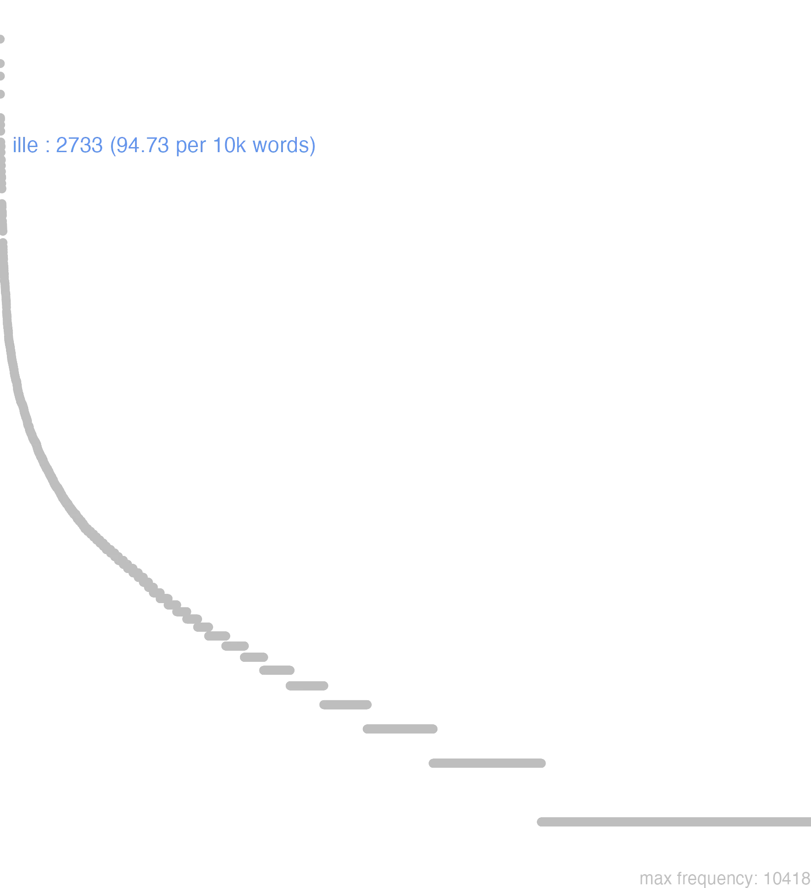

74 ille
74.0.0.1 bases lexicais
id: http://lila-erc.eu/data/id/lemma/106221
classe: determinante
paradigma: 1ª classe, pronominal (tema em -a/o-)
outras grafias: illece, illic, illicci, illici, olle
variantes do lema:
no data
illă
illĕ
illŭd
illī
illĭc
no data
74.0.0.2 dicionários tradicionais
illaec
v. illic. illanc
acus. sing. f. de illic Plaut. eis!. 123.
ille illa, illud
pron. demonstr.
v. illic. illanc
acus. sing. f. de illic Plaut. eis!. 123.
ille illa, illud
pron. demonstr.
1 I-Sent. próprio Aquele, aquela, aquilo; ele, ela, o, a designando o que está mais longe com referência a quem fala Cíc. Verr. 4, 147.
2 II-Sent. poético Desde então:
3 III-Empregos diversos: Famoso, célebre enfaticamente Cíc. De Or. 2, 58.
4 III-Empregos diversos: Ele interlocutor de um diálogo:
5 III-Empregos diversos: Tal, tais anunciando o que segue Cíc. Ac. 1, 22.
[EXEMPLOS]
2
ex illo Verg. En. 2, 169 «desde então».
4
tum ille Cíc. De Oro 1, 45 «então ele».
illi
dat. sing. m. f. e n. ou nom. pl. m. de ille, illa, illud.
illīus
gen. sing. m. f. e n. de ille.
illŭd
n. de ille.
illunc
v. illic. olle
arc. = ille Verg. En. 1, 252.
olli
dat. arc. de ille = illi.
1 illic illaec, illuc
formas arcaicas = ille, illa, illud Plaut. Mil. 657.
2 illa
nom. sing. f. e nom. acus. pl. n. de ille.
no data
Ille illa illud
1 Cic. aquelle, aquella, aquillo.
Cic. por Illis Ollis Plaut. por Illud Illuc Virg. por Illi Olli
Ille illa illud
Illic, vel Illhic, illaec, illuc, & c. pro Ille apud Comicos.
Illic, vel Illhic, illaec, illuc, & c. pro Ille apud Comicos.
1 elle, aquelle;
Ille -a ud
1 aquelle
74.0.0.3 dados de corpus
![This chart plots collocate by scoreSUBST, for the headword ille here are all the values plotted: collocate: qui; scoreSUBST: 0. collocate: quidem; scoreSUBST: 0. collocate: in; scoreSUBST: 0. collocate: cum; scoreSUBST: 0. collocate: at; scoreSUBST: 0. collocate: ab; scoreSUBST: 0. collocate: ad; scoreSUBST: 0. collocate: ipse; scoreSUBST: 0. collocate: si; scoreSUBST: 0. collocate: autem; scoreSUBST: 0. collocate: ex; scoreSUBST: 0. collocate: tempus; scoreSUBST: 2. collocate: dies; scoreSUBST: 2. collocate: etiam; scoreSUBST: 0. collocate: enim; scoreSUBST: 0. collocate: dico; scoreSUBST: 0. collocate: ne; scoreSUBST: 0. collocate: tamen; scoreSUBST: 0. collocate: aio; scoreSUBST: 0. collocate: idem; scoreSUBST: 0. collocate: uero; scoreSUBST: 0. collocate: noster; scoreSUBST: 0. collocate: tum; scoreSUBST: 0. collocate: et2; scoreSUBST: 0. collocate: ergo; scoreSUBST: 0. collocate: aetas; scoreSUBST: 2. collocate: quantus; scoreSUBST: 0. collocate: scio; scoreSUBST: 0. collocate: nox; scoreSUBST: 2. collocate: rex; scoreSUBST: 2. collocate: uerus; scoreSUBST: 0. collocate: quisquis; scoreSUBST: 0. collocate: beatus; scoreSUBST: 0. collocate: sicut; scoreSUBST: 0. collocate: obuius; scoreSUBST: 0. collocate: lentus; scoreSUBST: 0. collocate: respondeo; scoreSUBST: 0. collocate: uetus; scoreSUBST: 0. collocate: demens; scoreSUBST: 0. collocate: abduco; scoreSUBST: 0. collocate: mereo; scoreSUBST: 0. collocate: obseruo; scoreSUBST: 0. collocate: praecipio; scoreSUBST: 0. collocate: pestis; scoreSUBST: 2. collocate: Epicurus; scoreSUBST: 0. collocate: contumelia; scoreSUBST: 1. collocate: exstinguo; scoreSUBST: 0. collocate: quando; scoreSUBST: 0. collocate: quamquam2; scoreSUBST: 0. collocate: Iuppiter; scoreSUBST: 0](./Media/wordcloud__xx105-108-108-101xx__BY_collocate_scoreSUBST.webp)
![This chart plots collocate by scoreADJ, for the headword ille here are all the values plotted: collocate: qui; scoreADJ: 0. collocate: quidem; scoreADJ: 0. collocate: in; scoreADJ: 0. collocate: cum; scoreADJ: 0. collocate: at; scoreADJ: 0. collocate: ab; scoreADJ: 0. collocate: ad; scoreADJ: 0. collocate: ipse; scoreADJ: 0. collocate: si; scoreADJ: 0. collocate: autem; scoreADJ: 0. collocate: ex; scoreADJ: 0. collocate: tempus; scoreADJ: 0. collocate: dies; scoreADJ: 0. collocate: etiam; scoreADJ: 0. collocate: enim; scoreADJ: 0. collocate: dico; scoreADJ: 0. collocate: ne; scoreADJ: 0. collocate: tamen; scoreADJ: 0. collocate: aio; scoreADJ: 0. collocate: idem; scoreADJ: 0. collocate: uero; scoreADJ: 0. collocate: noster; scoreADJ: 0. collocate: tum; scoreADJ: 0. collocate: et2; scoreADJ: 0. collocate: ergo; scoreADJ: 0. collocate: aetas; scoreADJ: 0. collocate: quantus; scoreADJ: 0. collocate: scio; scoreADJ: 0. collocate: nox; scoreADJ: 0. collocate: rex; scoreADJ: 0. collocate: uerus; scoreADJ: 2. collocate: quisquis; scoreADJ: 0. collocate: beatus; scoreADJ: 2. collocate: sicut; scoreADJ: 0. collocate: obuius; scoreADJ: 2. collocate: lentus; scoreADJ: 2. collocate: respondeo; scoreADJ: 0. collocate: uetus; scoreADJ: 2. collocate: demens; scoreADJ: 2. collocate: abduco; scoreADJ: 0. collocate: mereo; scoreADJ: 0. collocate: obseruo; scoreADJ: 0. collocate: praecipio; scoreADJ: 0. collocate: pestis; scoreADJ: 0. collocate: Epicurus; scoreADJ: 0. collocate: contumelia; scoreADJ: 0. collocate: exstinguo; scoreADJ: 0. collocate: quando; scoreADJ: 0. collocate: quamquam2; scoreADJ: 0. collocate: Iuppiter; scoreADJ: 0](./Media/wordcloud__xx105-108-108-101xx__BY_collocate_scoreADJ.webp)
![This chart plots collocate by scoreVERBO, for the headword ille here are all the values plotted: collocate: qui; scoreVERBO: 0. collocate: quidem; scoreVERBO: 0. collocate: in; scoreVERBO: 0. collocate: cum; scoreVERBO: 0. collocate: at; scoreVERBO: 0. collocate: ab; scoreVERBO: 0. collocate: ad; scoreVERBO: 0. collocate: ipse; scoreVERBO: 0. collocate: si; scoreVERBO: 0. collocate: autem; scoreVERBO: 0. collocate: ex; scoreVERBO: 0. collocate: tempus; scoreVERBO: 0. collocate: dies; scoreVERBO: 0. collocate: etiam; scoreVERBO: 0. collocate: enim; scoreVERBO: 0. collocate: dico; scoreVERBO: 2. collocate: ne; scoreVERBO: 0. collocate: tamen; scoreVERBO: 0. collocate: aio; scoreVERBO: 3. collocate: idem; scoreVERBO: 0. collocate: uero; scoreVERBO: 0. collocate: noster; scoreVERBO: 0. collocate: tum; scoreVERBO: 0. collocate: et2; scoreVERBO: 0. collocate: ergo; scoreVERBO: 0. collocate: aetas; scoreVERBO: 0. collocate: quantus; scoreVERBO: 0. collocate: scio; scoreVERBO: 1. collocate: nox; scoreVERBO: 0. collocate: rex; scoreVERBO: 0. collocate: uerus; scoreVERBO: 0. collocate: quisquis; scoreVERBO: 0. collocate: beatus; scoreVERBO: 0. collocate: sicut; scoreVERBO: 0. collocate: obuius; scoreVERBO: 0. collocate: lentus; scoreVERBO: 0. collocate: respondeo; scoreVERBO: 2. collocate: uetus; scoreVERBO: 0. collocate: demens; scoreVERBO: 0. collocate: abduco; scoreVERBO: 2. collocate: mereo; scoreVERBO: 2. collocate: obseruo; scoreVERBO: 2. collocate: praecipio; scoreVERBO: 2. collocate: pestis; scoreVERBO: 0. collocate: Epicurus; scoreVERBO: 0. collocate: contumelia; scoreVERBO: 0. collocate: exstinguo; scoreVERBO: 1. collocate: quando; scoreVERBO: 0. collocate: quamquam2; scoreVERBO: 0. collocate: Iuppiter; scoreVERBO: 0](./Media/wordcloud__xx105-108-108-101xx__BY_collocate_scoreVERBO.webp)
![This chart plots collocate by scoreADV, for the headword ille here are all the values plotted: collocate: qui; scoreADV: 0. collocate: quidem; scoreADV: 4. collocate: in; scoreADV: 0. collocate: cum; scoreADV: 0. collocate: at; scoreADV: 0. collocate: ab; scoreADV: 0. collocate: ad; scoreADV: 0. collocate: ipse; scoreADV: 0. collocate: si; scoreADV: 0. collocate: autem; scoreADV: 0. collocate: ex; scoreADV: 0. collocate: tempus; scoreADV: 0. collocate: dies; scoreADV: 0. collocate: etiam; scoreADV: 2. collocate: enim; scoreADV: 2. collocate: dico; scoreADV: 0. collocate: ne; scoreADV: 0. collocate: tamen; scoreADV: 2. collocate: aio; scoreADV: 0. collocate: idem; scoreADV: 0. collocate: uero; scoreADV: 2. collocate: noster; scoreADV: 0. collocate: tum; scoreADV: 2. collocate: et2; scoreADV: 2. collocate: ergo; scoreADV: 0. collocate: aetas; scoreADV: 0. collocate: quantus; scoreADV: 0. collocate: scio; scoreADV: 0. collocate: nox; scoreADV: 0. collocate: rex; scoreADV: 0. collocate: uerus; scoreADV: 0. collocate: quisquis; scoreADV: 0. collocate: beatus; scoreADV: 0. collocate: sicut; scoreADV: 0. collocate: obuius; scoreADV: 0. collocate: lentus; scoreADV: 0. collocate: respondeo; scoreADV: 0. collocate: uetus; scoreADV: 0. collocate: demens; scoreADV: 0. collocate: abduco; scoreADV: 0. collocate: mereo; scoreADV: 0. collocate: obseruo; scoreADV: 0. collocate: praecipio; scoreADV: 0. collocate: pestis; scoreADV: 0. collocate: Epicurus; scoreADV: 0. collocate: contumelia; scoreADV: 0. collocate: exstinguo; scoreADV: 0. collocate: quando; scoreADV: 1. collocate: quamquam2; scoreADV: 1. collocate: Iuppiter; scoreADV: 0](./Media/wordcloud__xx105-108-108-101xx__BY_collocate_scoreADV.webp)
![This chart plots collocate by scoreFUNC, for the headword ille here are all the values plotted: collocate: qui; scoreFUNC: 0. collocate: quidem; scoreFUNC: 0. collocate: in; scoreFUNC: 20. collocate: cum; scoreFUNC: 20. collocate: at; scoreFUNC: 0. collocate: ab; scoreFUNC: 20. collocate: ad; scoreFUNC: 20. collocate: ipse; scoreFUNC: 0. collocate: si; scoreFUNC: 20. collocate: autem; scoreFUNC: 0. collocate: ex; scoreFUNC: 20. collocate: tempus; scoreFUNC: 0. collocate: dies; scoreFUNC: 0. collocate: etiam; scoreFUNC: 0. collocate: enim; scoreFUNC: 0. collocate: dico; scoreFUNC: 0. collocate: ne; scoreFUNC: 20. collocate: tamen; scoreFUNC: 0. collocate: aio; scoreFUNC: 0. collocate: idem; scoreFUNC: 0. collocate: uero; scoreFUNC: 0. collocate: noster; scoreFUNC: 0. collocate: tum; scoreFUNC: 0. collocate: et2; scoreFUNC: 0. collocate: ergo; scoreFUNC: 0. collocate: aetas; scoreFUNC: 0. collocate: quantus; scoreFUNC: 0. collocate: scio; scoreFUNC: 0. collocate: nox; scoreFUNC: 0. collocate: rex; scoreFUNC: 0. collocate: uerus; scoreFUNC: 0. collocate: quisquis; scoreFUNC: 0. collocate: beatus; scoreFUNC: 0. collocate: sicut; scoreFUNC: 20. collocate: obuius; scoreFUNC: 0. collocate: lentus; scoreFUNC: 0. collocate: respondeo; scoreFUNC: 0. collocate: uetus; scoreFUNC: 0. collocate: demens; scoreFUNC: 0. collocate: abduco; scoreFUNC: 0. collocate: mereo; scoreFUNC: 0. collocate: obseruo; scoreFUNC: 0. collocate: praecipio; scoreFUNC: 0. collocate: pestis; scoreFUNC: 0. collocate: Epicurus; scoreFUNC: 0. collocate: contumelia; scoreFUNC: 0. collocate: exstinguo; scoreFUNC: 0. collocate: quando; scoreFUNC: 0. collocate: quamquam2; scoreFUNC: 0. collocate: Iuppiter; scoreFUNC: 0](./Media/wordcloud__xx105-108-108-101xx__BY_collocate_scoreFUNC.webp)
![This charts plots the frequency of lemma by author_Frequencies. The Hieronymus subcorpus registers the highest normalized frequency, with the value of 238.15 and an absolute frequency of 106. The Seneca subcorpus follows, with a normalized frequency of 126.16 and an absolute frequency of 676. the subcorpus with the least normalized frequency is Suetonius with the normalized value of 11.03 and an absolute freqeuncy of 1. here are all the values: subcorpus: Caesar ; normalized frequency: 57 ; absolute frequency: 21.5273056877408. subcorpus: Cicero ; normalized frequency: 1592 ; absolute frequency: 99.1752012160175. subcorpus: Horatius ; normalized frequency: 66 ; absolute frequency: 58.6093597371459. subcorpus: Ovidius ; normalized frequency: 49 ; absolute frequency: 84.0768702814001. subcorpus: Phaedrus ; normalized frequency: 73 ; absolute frequency: 110.824350994383. subcorpus: Sallustius ; normalized frequency: 78 ; absolute frequency: 72.3495037566089. subcorpus: Seneca ; normalized frequency: 676 ; absolute frequency: 126.164125342939. subcorpus: Suetonius ; normalized frequency: 1 ; absolute frequency: 11.0253583241455. subcorpus: Tacitus ; normalized frequency: 6 ; absolute frequency: 20.5973223480947. subcorpus: Vergilius ; normalized frequency: 29 ; absolute frequency: 55.984555984556. subcorpus: Hieronymus ; normalized frequency: 106 ; absolute frequency: 238.148730622332](./Media/barchart__xx105-108-108-101xx__lemma_BY_author_Frequencies.webp)
![This charts plots the frequency of lemma by genre_Frequencies. The Prosa.ficcional subcorpus registers the highest normalized frequency, with the value of 238.15 and an absolute frequency of 106. The Prosa.filosófica subcorpus follows, with a normalized frequency of 124.05 and an absolute frequency of 753. the subcorpus with the least normalized frequency is Prosa.histórica with the normalized value of 34.57 and an absolute freqeuncy of 142. here are all the values: subcorpus: Prosa.histórica ; normalized frequency: 142 ; absolute frequency: 34.5675405925169. subcorpus: Prosa.filosófica ; normalized frequency: 753 ; absolute frequency: 124.050674618211. subcorpus: Prosa.oratória ; normalized frequency: 1097 ; absolute frequency: 105.32581874742. subcorpus: Prosa.epistolográfica ; normalized frequency: 365 ; absolute frequency: 96.7169241368346. subcorpus: Poesia.lírica ; normalized frequency: 70 ; absolute frequency: 58.8878606881467. subcorpus: Poesia.didática ; normalized frequency: 118 ; absolute frequency: 100.093307320383. subcorpus: Poesia.trágica ; normalized frequency: 53 ; absolute frequency: 46.0389159138291. subcorpus: Poesia.épica ; normalized frequency: 29 ; absolute frequency: 55.984555984556. subcorpus: Prosa.ficcional ; normalized frequency: 106 ; absolute frequency: 238.148730622332](./Media/barchart__xx105-108-108-101xx__lemma_BY_genre_Frequencies.webp)
![This charts plots the frequency of lemma by period_Frequencies. The IV.d.C. subcorpus registers the highest normalized frequency, with the value of 238.15 and an absolute frequency of 106. The I.d.C. subcorpus follows, with a normalized frequency of 121.46 and an absolute frequency of 794. the subcorpus with the least normalized frequency is II.d.C. with the normalized value of 18.32 and an absolute freqeuncy of 7. here are all the values: subcorpus: I.a.C. ; normalized frequency: 1826 ; absolute frequency: 84.9895275773796. subcorpus: I.d.C. ; normalized frequency: 794 ; absolute frequency: 121.462444546428. subcorpus: II.d.C. ; normalized frequency: 7 ; absolute frequency: 18.3246073298429. subcorpus: IV.d.C. ; normalized frequency: 106 ; absolute frequency: 238.148730622332](./Media/barchart__xx105-108-108-101xx__lemma_BY_period_Frequencies.webp)
Respondit ille :
Phaed.1.22
Respondeu aquele. [JDD]
ille demens ruere
Cic.Att.4.3.2
Ele antes se lançava enlouquecido. [JDD, de outra edição]
ille sic dies
Cic.Att.5.1.3
Assim aquele dia. [JDD]
et ait illis
Vulg.Marc.1.38
E ele lhes disse. [JDD]
et tamen illud probem
Cic.Att.2.14.2
E, no entanto, muito bom aquele [JDD, de outra edição]
ille uero non patitur
Sen.Prov.6.1
Ele, na verdade, não consente. [JDD]
sed redeo ad illud
Cic.Att.5.2.3
Mas volto àquilo. [JDD]
malam quidem illi pestem
Cic.Phil.6.12.8
Que a má peste o carregue! [JDD]
At ille lentus : inquit
Phaed.1.15
Mas aquele, tranquilo. [JDD]
Illi dixerunt bovem . esse
Phaed.1.24
Eles disseram o boi. [JDD]
o illud verum ἔρδοι τις
Cic.Att.5.10.3
Ó que verdade aquilo de “faça cada qual…”! [JDD, de outra edição]
quomodo ergo ad illam accedit
Sen.Ep.9.12
“Como então chega a ela?” [JDD]
illa omnia in Tusculanum deportabo
Cic.Att.1.4.3
Vou transportá-las todas para a chácara de Túsculo. [JDD]
Repulsus ille veritatis viribus : ait
Phaed.1.1
Repelido pela força da verdade, diz aquele. [JDD]
illa hoc unum iubet sitim extingui
Sen.Ep.119.3
Ela só exige isto, matar a sede. [JDD]
abiit illud tempus mutata ratio est
Cic.Mur.7
Foi-se aquele tempo; a situação está mudada. [JDD]
ille autem Regis hereditatem spe devorarat
Cic.Att.1.16.10
(Ele tinha consumido a herança de Rei, na esperança [de recebê-la]. [JDD]
abduc illum a priuata causa ad publicam
Sen.Ep.24.16
Leva-o de tua causa privada para uma causa pública. [JDD]
eodem modo dicendum est diuitiae illum tenent
Sen.Ep.119.12
do mesmo modo deve se dizer “a riqueza se apoderou dele”. [JDD]
valet autem auctoritas eius apud illum plurimum
Cic.Att.5.11.3
a autoridade deste vale muitíssimo junto a ele. [JDD]
sic illi tum inanes ad Antiochum reuertuntur
Cic.Ver.2.4.65.20
Assim eles então voltam de mãos vazias para junto de Antíoco [JDD]
quam dissimilis hic dies illi tempori uidebatur
Cic.Ver.2.4.77.11
Quão diferente lhes parecia este dia daquele momento! [JDD]
isto enim nomine illa adhuc causa caruit
Cic.Lig.17
Pois tal causa não teve até agora esse nome. [JDD]
non enim dicentur tantum illa sed probabuntur
Sen.Ep.20.9
pois aquelas coisas não só serão ditas, mas serão provadas.” [JDD]
hoc Curio ad patrem detulit ille ad Pompeium
Cic.Att.2.24.2
Curião denunciou isto ao pai, este a Pompeu. [JDD]
Ita caput ad nostrum furor illorum pertinet .
Phaed.1.30
Assim o furor deles tem a ver com a nossa cabeça.” [JDD]
nam de ipso casu nescio an illud melius
Cic.Att.4.8A.2
Pois a respeito do caso em si, não sei se aquilo foi melhor. [JDD]
prouinciam suam hanc esse Galliam sicut illam nostram
Caes.Gal.1.44.8
Que esta Gália era província sua, assim como aquela era nossa. [JDD]
illa uero non est paupertas si laeta est
Sen.Ep.2.6
Na verdade, não é pobreza, se ela é feliz. [JDD]
Unde illa scivit niger an albus nascerer ?
Phaed.3.15
De onde ela soube se eu nasceria negro ou branco? [JDD]
proximos illi tamen occupauit Pallas honores proeliis audax
Hor.Carm.1.12.19
Contudo, teve as honras mais próximas a ele Palas, audaz nos combates. [JDD]
hoc illius munus in tua diligentia positum est
Cic.Att.2.1.12
Esse presente dele foi colocado aos teus cuidados. [JDD]
et observabant eum si sabbatis curaret ut accusarent illum
Vulg.Marc.3.2
E observavam-no se ele curaria no sábado a fim de acusá-lo. [JDD]
quomodo ergo illud bonum est cum haec non sint
Sen.Ep.118.13
De que modo, então, aquele é um bem quando estas não são? [JDD]
loco ille motus est cum est ex urbe depulsus
Cic.Catil.2.1.11
Ele foi desalojado de sua posição, quando foi expulso da cidade. [JDD]
Contempsit illa , tuta quippe ipso loco . erat
Phaed.1.28
Aquela desdenhou, segura certamente em seu próprio local. [JDD]
utebamur enim illis non quia debebamus sed quia habebamus
Sen.Ep.123.6
pois as usávamos não porque devíamos, mas porque as tínhamos. [JDD]
debemus itaque exerceri ne haec timeamus ne illa cupiamus
Sen.Ep.123.13
Devemos, por isso, exercitar-nos para que não temamos estas, para que não cobicemos aquelas. [JDD]
cum illis tamen cum salvi venerint Romae vivere licebit
Cic.Att.4.15.2
Te será permitido, contudo, viver com eles em Roma, quando chegarem sãos e salvos. [JDD]
uidete nunc illum primum egredientem e uilla subito cur
Cic.Mil.54
Vede agora aquele, primeiramente saindo repentinamente da chácara: por quê? [JDD]
respondent illae praetoris in eo loco seruos esse uisos
Cic.Ver.2.4.100.11
Elas respondem que tinham sido vistos escravos do pretor nesse local. [JDD]
magna pax Antonio cum eis his item cum illo
Cic.Phil.7.23.9
Grande paz de Antônio com eles e igualmente deles com ele. [JDD]
refice illum et mitte in senatum eandem sententiam dicet
Sen.Prov.3.9
Reanima-o e manda-o ao senado: dirá a mesma opinião. [JDD]
quanto ille plura miscebat tanto hic magis in dies conualescebat
Cic.Mil.25
Quanto mais coisas ele [Clódio] agitava, mais este [Milão] se fortalecia a cada dia. [JDD]
ille prudens atque artifex pro tempore quaeque repellet aut eliget
Sen.Ep.31.6
O sábio prudente e hábil, conforme o tempo, vai repelir ou eleger cada uma dessas coisas. [JDD]
neque uero illum similiter atque ipse eram commotum esse uidi
Cic.Phil.1.9.8
E, na verdade, não o vi abalado como eu próprio estava. [JDD]
nec ille armis solum sed etiam decretis nostris urgendus est
Cic.Phil.3.32.7
Ele deve ser perseguido não só com as armas, mas também com nossos decretos. [JDD, de outra edição]
flagrabant uitia libidinis apud illum uigebant etiam studia rei militaris
Cic.Cael.12
Ardiam nele os vícios do prazer libidinoso; florescia também o gosto pelos assuntos militares. [JDD]
ille autem non simulat sed plane tribunus plebis fieri cupit
Cic.Att.2.1.5
Já aquele não disfarça, mas revela abertamente o desejo de se tornar tribuno da plebe. [JDD, de outra edição]
illi inquam urbi fortissime conanti e manibus est ereptus Antonius
Cic.Phil.12.7.16
Das mãos daquela, eu digo, daquela cidade que com muita valentia tentava, Antônio foi resgatado. [JDD]
74.0.0.4 Diagrama de Zipf
